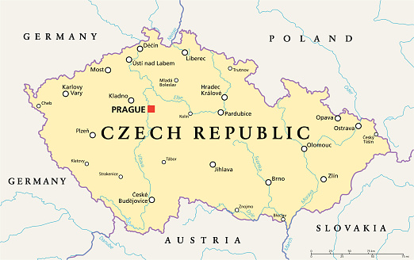

Opava
- Founded: 1931
- Total Area: 90.61km^2
- Population: 56834
- Website
Grine
- Northern CZECH
- City, ST, 12345
- (555) 555-5555
- Website
- Coming in Spring 2015
MIada Boleslav
- Southern CZECH
- Iskele District
- Website
Jihlava
- Area = 87.6km^2
- Elevation = 525m
- population = 50,891
- Website
Olomouc
- Founded = 1017
- Area = 103km^2
- Elevation = 219m
- Website
PRAGUE
- PRAGUE is capital
of czech
- population - 13.1 lakhs
- Area = 496km^2
- Website
- Mayor: Zdeněk Hřib
plzen
- Area = 137.6km^2
- Elevation = 310m
- Populatin - 1.72lakhs
- Website
- Famous-football
Ceske Budejovice
- Elevation = 381m
- Area = 55.7km^2
- population = 93,984
- Website
Brno
- Elevation = 237m
- Population - 3.8lakhs
- Area = 230.2km^2
- Website